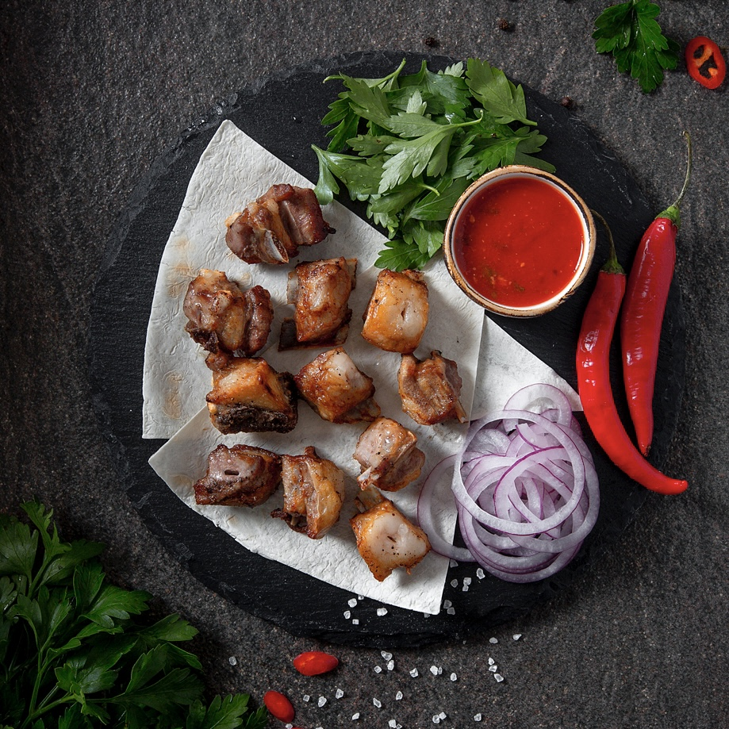
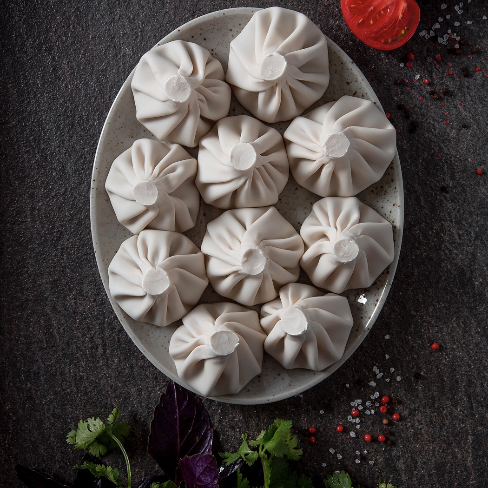
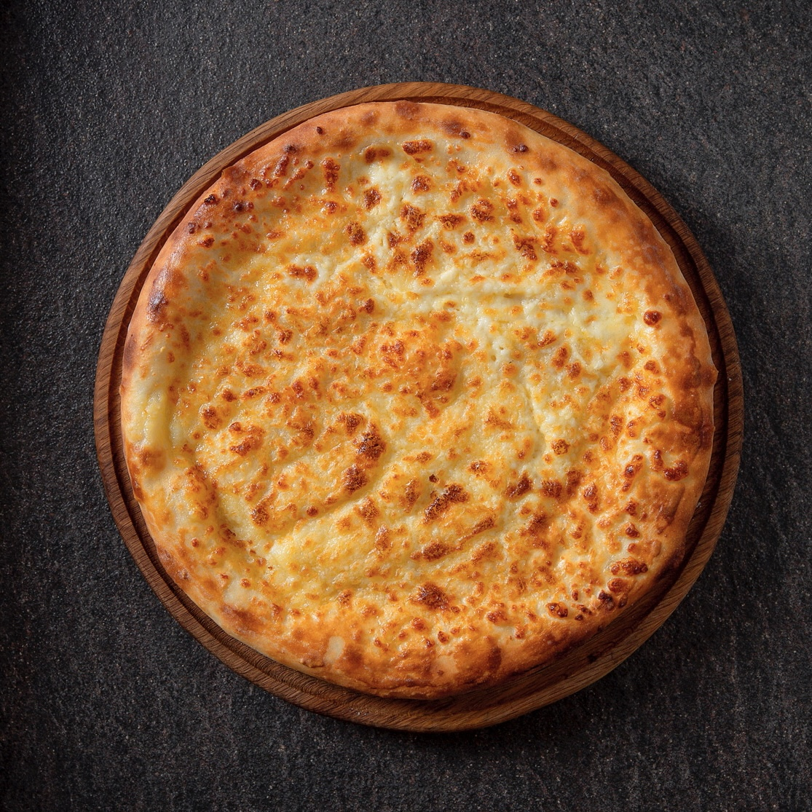
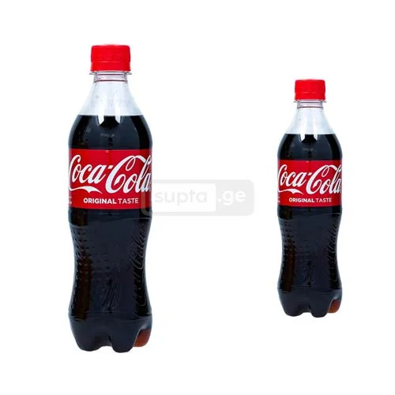
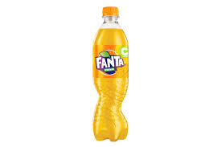
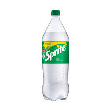

ძირითადი კერძები:
პირველი კერძი: მწვადი.
მოკლე აღწერა: რბილად დამარინადებული ღორის ხორცი, ნაზად შემწვარი მუხის ნაკერჩხალზე. თან ახლავს ხახვი, ტყემალი და სეზონური მწვანილი. კლასიკა, რომელიც არასდროს ბერდება.
ფასი: 12 ლარი
მეორე კერძი: ხინკალი.
მოკლე აღწერა: წვნიანი, ხელით საჭმელი და გულით გასაკეთებელი. ქართული სუფრის ვარსკვლავი!
ფასი: 1,5 ლარი
მესამე კერძი: ხაჭაპური.
ხაჭაპური — ყველის დღესასწაული! გადნარი ყველი, ფაფუკი ცომი და ქართული სითბო თითოეულ ლუკმაში.
ფასი: 15 ლარი
სასმელები:
პირველი სასმელი: კოკა კოლა.
ცივი, გაზიანი და გამაგრილებელი — ლეგენდარული გემო, რომელიც ყოველთვის უხდება კარგ კერძს.
ფასი: 3 ლარი
მეორე სასმელი: ფანტა
ცივი, ციტრუსოვანი და გაზიანი — ფორთოხლის გემოს კლასიკა, რომელიც ყოველთვის აცოცხლებს განწყობას.
ფასი: 3 ლარი
მესამე სასმელი: სპრაიტი
ცივი, ლიმონ-ლაიმის არომატით და მსუბუქი გაზიანობით — სუფთა და გამაჯანსაღებელი არჩევანი.
ფასი: 3 ლარი